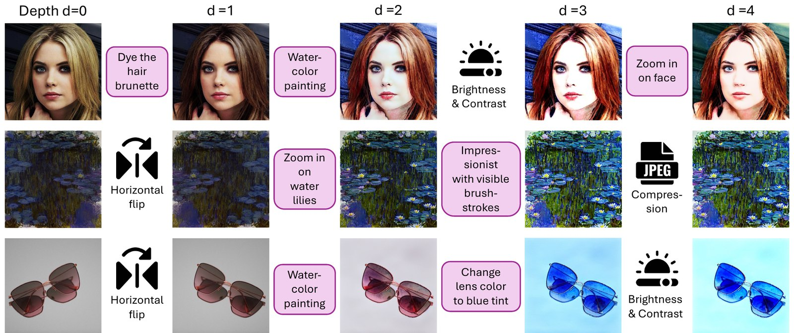
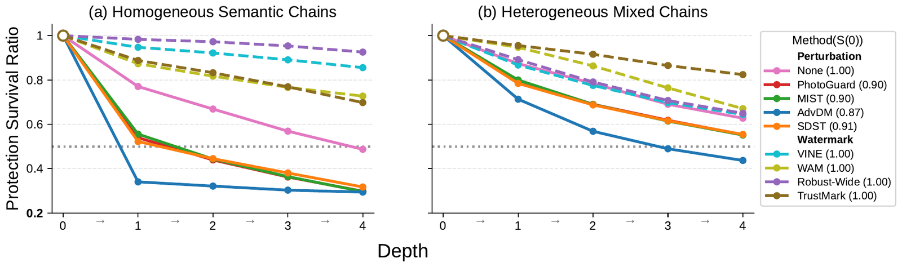
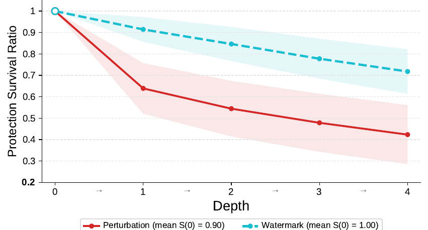
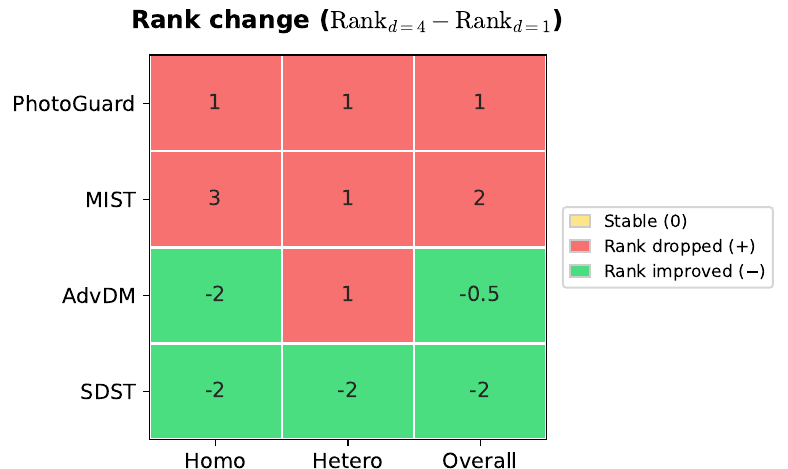
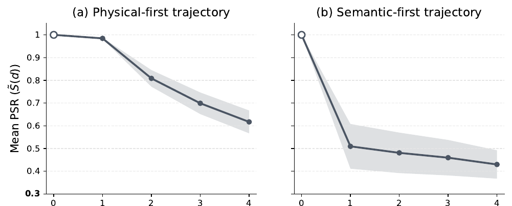

PREEMPT: Proactive Robustness Evaluation under Editing for Media Protection Techniques
Abstract
Proactive image protection methods aim to defend visual content against unauthorized manipulation and generative misuse by embedding protective signals into images before release. Evaluating whether these protections remain effective under image editing is therefore critical. However, existing evaluations remain largely limited to one-shot edits, providing only a static view of robustness while overlooking its evolution under realistic multi-step editing workflows. To systematically characterize robustness dynamics under sequential editing across various protection paradigms, we introduce PREEMPT, a holistic evaluation framework. It evaluates protection robustness under both one-shot and sequential editing scenarios, covering image transformations, semantic edits, homogeneous and heterogeneous edit compositions. To enable consistent analysis across protection paradigms with different underlying objectives, PREEMPT normalizes task-specific effectiveness into protection survival trajectories and summarizes long-horizon robustness through trajectory-based diagnostics. Using this framework, we reveal that degradation behaviors remain hidden under conventional one-shot evaluation. We further find that perturbation- and watermark-based protection methods exhibit fundamentally different failure modes, and that the first semantic edit largely determines subsequent degradation trajectories. PREEMPT provides a standardized protocol for studying long-horizon robustness and offers new insights into the degradation dynamics of proactive image protection.
Evaluation Pipeline
One-Shot Edit. Each protected image is edited once, either by an image transformation (Gaussian blur, JPEG compression, crop-and-resize, horizontal flip, brightness/contrast) or by a semantic edit in one of four categories: Content, Attribute, Style, and Spatial. Semantic edits are executed by InstructPix2Pix and Stable Diffusion 2.1.
Sequential Edit. Each protected image is edited repeatedly. Simple chains repeat semantic edits from one category (content-only C1, attribute-only C2, style-only C3, spatial-only C4). Mixed chains combine semantic edits with image transformations to simulate practical editing workflows. The default chain depth is d = 4.

Representative heterogeneous editing trajectories. Rows correspond to faces, artworks, and objects.
Protection Survival Representation
Perturbation-based methods are measured by semantic similarity (ArcFace for faces, CSD for artworks, DINOv2 for objects) and watermark-based methods by message retrieval accuracy. PREEMPT expresses both as a survival trajectory over editing depth.
Results

Protection survival curves under homogeneous semantic chains (left) and heterogeneous mixed chains (right). Robustness evolves progressively with editing depth rather than remaining a static endpoint.

Survival curves aggregated by protection paradigm. Perturbation- and watermark-based methods exhibit distinct robustness evolution patterns under sequential editing.

Average rank change from one-shot (d = 1) to long-horizon (d = 4) evaluation. One-shot rankings are not consistently preserved.

Trajectories grouped by the first edit. Physical-first trajectories stay largely unchanged until the first semantic edit; semantic-first trajectories change immediately.
Key Findings
- Robustness evolves paradigm-specifically. Perturbation-based methods change sharply after the first edit and then diverge across methods; watermark-based methods degrade more smoothly.
- One-shot robustness does not predict long-horizon robustness. One-shot scores and PAUC show only a moderate association (r ≈ 0.40, R² ≈ 0.16), and method rankings change between d = 1 and d = 4.
- The first semantic edit dominates. On homogeneous semantic chains it accounts for 63%–93% of the total degradation; on heterogeneous chains the share drops to 44%–52%.
BibTeX
@inproceedings{preempt2027,
title = {PREEMPT: Proactive Robustness Evaluation under Editing for Media Protection Techniques},
author = {Tang, Qiuyu and Bharati, Aparna},
booktitle = {Proceedings of the IEEE/CVF Winter Conference on Applications of Computer Vision (WACV)},
year = {2027}
}